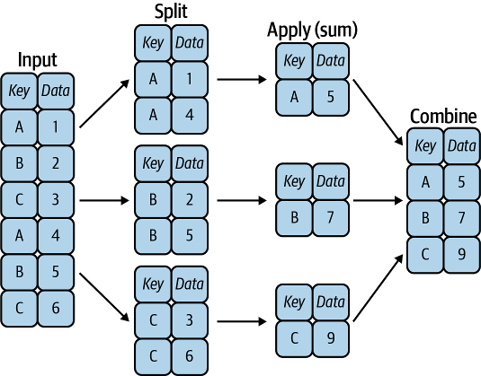
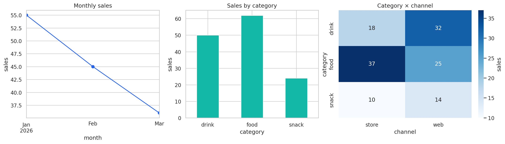

입력과 전달물
- 전: 1월 drink 10·20, 2월 drink 30·food 40.
- 후: 월별 30·70, 범주별 drink 60·food 40.
데이터 요약과 시계열 처리
거래 네 건에서 매장 담당자에게 전달할 범주·월별 매출 요약표를 만든다.
02 · PANDAS
| category | channel | sales | |
|---|---|---|---|
| 1 | " Drink " | web | 10 |
| 2 | "drink" | web | 20 |
| 3 | "DRINK" | store | 30 |
| 4 | "Food" | store | 40 |
import pandas as pd
import numpy as np
sales = pd.DataFrame({
"category": [" Drink ", "drink",
"DRINK", "Food"],
"channel": ["web", "web", "store", "store"],
"sales": [10, 20, 30, 40],
}, index=[1, 2, 3, 4])
print(sales)category channel sales 1 Drink web 10 2 drink web 20 3 DRINK store 30 4 Food store 40
03 · PANDAS
category 1 " Drink " 2 "drink" 3 "DRINK" 4 "Food"
sales["category_clean"] = (
sales["category"].astype("string")
.str.strip().str.lower()
)
print(sales["category_clean"])
1 drink 2 drink 3 drink 4 food Name: category_clean, dtype: string
04 · PANDAS
Key Data 0 A 1 1 B 2 2 C 3 3 A 4 4 B 5 5 C 6
example = pd.DataFrame({
"Key": list("ABCABC"),
"Data": [1, 2, 3, 4, 5, 6]
})
print(example.groupby("Key")["Data"].sum())Key A 5 B 7 C 9 Name: Data, dtype: int64

05 · PANDAS
category_clean sales 1 drink 10 2 drink 20 3 drink 30 4 food 40
summary = sales.groupby("category_clean").agg(
n=("sales", "size"),
total=("sales", "sum"),
avg=("sales", "mean")
)
print(summary)n total avg category_clean drink 3 60 20.0 food 1 40 40.0
06 · PANDAS
category_clean sales 1 drink 10 2 drink 20 3 drink 30 4 food 40 drink 그룹: ID 1·2·3 → 합 60 food 그룹: ID 4 → 합 40
group_total = sales.groupby(
"category_clean")["sales"].transform("sum")
groups = sales.groupby("category_clean")
kept = groups.filter(lambda g: len(g) >= 3)
print(group_total)
print("남은 ID:", kept.index.tolist())1 60 2 60 3 60 4 40 Name: sales, dtype: int64 남은 ID: [1, 2, 3]
07 · PANDAS
| category_clean | channel | sales | |
|---|---|---|---|
| 1 | drink | web | 10 |
| 2 | drink | web | 20 |
| 3 | drink | store | 30 |
| 4 | food | store | 40 |
matrix = sales.pivot_table( values="sales", index="category_clean", columns="channel", aggfunc="sum", fill_value=0, ) print(matrix)
channel store web category_clean drink 30 30 food 40 0
08 · PANDAS
0 "Latte|HOT" 1 "hotdog|cold" 2 결측
tags = pd.Series(
["Latte|HOT", "hotdog|cold", None], dtype="string")
parsed = tags.str.split("|", expand=True)
parsed.columns = ["item", "tag"]
print(parsed.to_string(index=False))
print(tags.str.contains("hot", case=False, na=False).tolist())
print((parsed["tag"].str.lower() == "hot").fillna(False).tolist())item tag Latte HOT hotdog cold <NA> <NA> [True, True, False] [True, False, False]
09 · PANDAS
시점: 2026-02-01 09:30 기간: 2026-02 한 달 간격: 2일 격자: 03-01부터 하루 간격 3개
stamp = pd.Timestamp("2026-02-01 09:30")
period = pd.Period("2026-02", freq="M")
delta = pd.Timedelta(days=2)
days = pd.date_range("2026-03-01", periods=3, freq="D")
print(stamp + delta)
print(period)
print(days.strftime("%m-%d").tolist())2026-02-03 09:30:00 2026-02 ['03-01', '03-02', '03-03']
10 · PANDAS
0 "2026-02-28" 1 "2026-02-30" 2 원래 결측
sales["occurred_at"] = [
"2026-01-03", "2026-01-10",
"2026-02-01", "2026-02-14",
]
sales["occurred_at"] = pd.to_datetime(sales["occurred_at"])
assert sales["occurred_at"].notna().all()
probe = pd.Series(["2026-02-28", "2026-02-30", None])
checked = pd.to_datetime(probe, errors="coerce")
print(checked)
print("결측:", checked.isna().sum())0 2026-02-28 1 NaT 2 NaT dtype: datetime64[ns] 결측: 2
11 · PANDAS
| occurred_at | sales | |
|---|---|---|
| 1 | 2026-01-03 | 10 |
| 2 | 2026-01-10 | 20 |
| 3 | 2026-02-01 | 30 |
| 4 | 2026-02-14 | 40 |
ts = sales.set_index("occurred_at").sort_index()
print(type(ts.index).__name__)
print(ts.loc["2026-02", ["sales"]])DatetimeIndex
sales
occurred_at
2026-02-01 30
2026-02-14 4012 · PANDAS
| occurred_at | sales |
|---|---|
| 2026-01-03 | 10 |
| 2026-01-10 | 20 |
| 2026-02-01 | 30 |
| 2026-02-14 | 40 |
monthly = ts["sales"].resample("MS").sum()
print(monthly)occurred_at 2026-01-01 30 2026-02-01 70 Freq: MS, Name: sales, dtype: int64
13 · PANDAS
2026-03-01 10 2026-03-02 20 2026-03-03 30
daily = pd.Series([10, 20, 30],
index=pd.date_range("2026-03-01", periods=3))
print("구간 합:", daily.resample("2D").sum().tolist())
print("격자 값:", daily.asfreq("2D").tolist())구간 합: [30, 30] 격자 값: [10, 30]
14 · PANDAS
2026-03-01 10 2026-03-03 30
sparse = daily.loc[["2026-03-01", "2026-03-03"]]
grid = sparse.asfreq("D")
print(pd.DataFrame({
"raw": grid,
"ffill": grid.ffill(),
"bfill": grid.bfill(),
}))raw ffill bfill 2026-03-01 10.0 10.0 10.0 2026-03-02 NaN 10.0 30.0 2026-03-03 30.0 30.0 30.0
15 · PANDAS
| occurred_at | sales |
|---|---|
| 2026-01-01 | 30 |
| 2026-02-01 | 70 |
change = pd.DataFrame({"sales": monthly})
change["previous"] = monthly.shift(1)
change["change"] = monthly - change["previous"]
change["rolling_2"] = monthly.rolling(2).mean()
print(change.rename(columns={
"previous":"prev", "rolling_2":"avg2"
}))sales prev change avg2 occurred_at 2026-01-01 30 NaN NaN NaN 2026-02-01 70 30.0 40.0 50.0
16 · PANDAS
sales channel 1 10 web 2 20 web 3 30 store 4 40 store
threshold = 15
selected = sales.query('sales >= @threshold and channel == "web"')
with_tax = sales.eval("tax = sales * 0.1")
print("선택 ID:", selected.index.tolist())
print("세금:", with_tax["tax"].tolist())
print(np.allclose(with_tax["tax"], sales["sales"] * 0.1))선택 ID: [2] 세금: [1.0, 2.0, 3.0, 4.0] True
17 · PANDAS
sales channel 1 10 web 2 20 web 3 30 store 4 40 store
tmp1 = sales["sales"] >= 15
tmp2 = sales["channel"] == "web"
mask = tmp1 & tmp2
print(tmp1.tolist())
print(tmp2.tolist())
print(mask.tolist())
print("bytes:", tmp1.values.nbytes,
tmp2.values.nbytes, mask.values.nbytes)[False, True, True, True] [True, True, False, False] [False, True, False, False] bytes: 4 4 4
18 · PANDAS
| occurred_at | category_clean | sales | |
|---|---|---|---|
| 1 | 2026-01-03 | drink | 10 |
| 2 | 2026-01-10 | drink | 20 |
| 3 | 2026-02-01 | drink | 30 |
| 4 | 2026-02-14 | food | 40 |
prepared = sales.assign(
category=sales["category_clean"]
).set_index("occurred_at").sort_index()
by_month = prepared.groupby([
pd.Grouper(freq="MS"), "category"
])["sales"].sum()
plot_data = by_month.unstack(fill_value=0)
print(plot_data)category drink food occurred_at 2026-01-01 30 0 2026-02-01 30 40
19 · PANDAS
monthly: [30, 70] summary["total"]: [60, 40] matrix channel store web category_clean drink 30 30 food 40 0
# 앞에서 만든 세 요약표
print("월별:", monthly.tolist())
print("범주별:", summary["total"].tolist())
print("교차 셀:", matrix.values.tolist())월별: [30, 70] 범주별: [60, 40] 교차 셀: [[30, 30], [40, 0]]

20 · PANDAS
| occurred_at | drink | food |
|---|---|---|
| 2026-01-01 | 30 | 0 |
| 2026-02-01 | 30 | 40 |
열 축 이름: category
총합 100, 2×2 표
반례: 첫 행 [30,0] → [29,1]
expected = [[30, 0], [30, 40]]
assert len(sales) == 4 and sales.index.is_unique
assert prepared.index.is_monotonic_increasing
assert not prepared.index.hasnans
assert plot_data.shape == (2, 2)
assert plot_data.values.sum() == sales["sales"].sum() == 100
assert plot_data.values.tolist() == expected
bad = plot_data.copy()
bad.iloc[0] = [29, 1]
print("정상: 모든 검사 통과")
print("반례 합계:", bad.values.sum() == 100)
print("반례 셀:", bad.values.tolist() == expected)정상: 모든 검사 통과 반례 합계: True 반례 셀: False
데이터 요약과 시계열 처리
입력의 각 행이 어디로 이동하고 어떻게 합쳐지는지 추적해 결과를 검산한다.